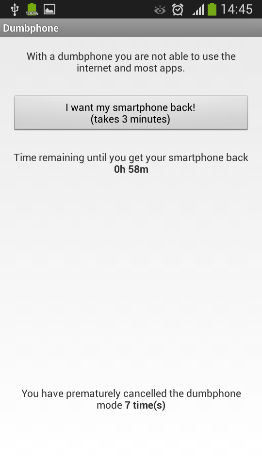
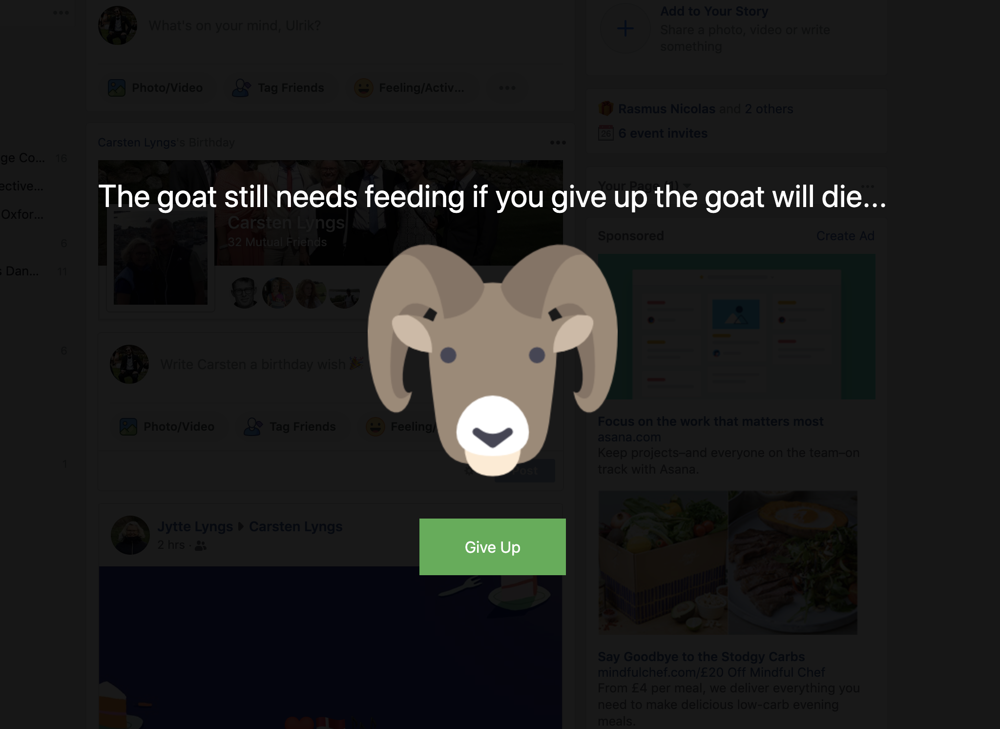
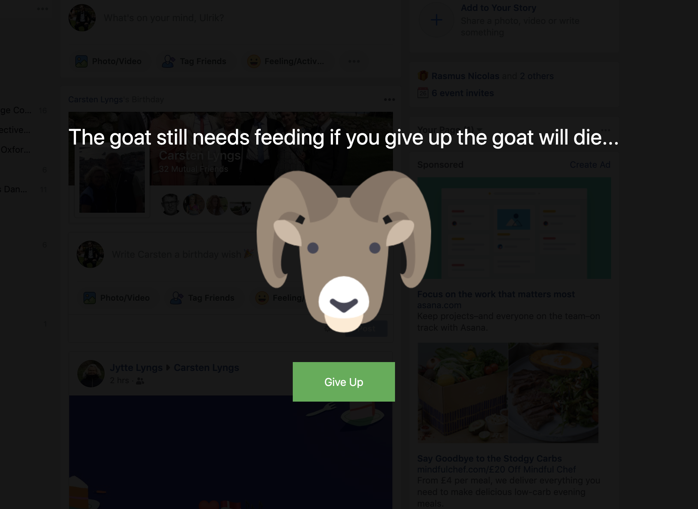
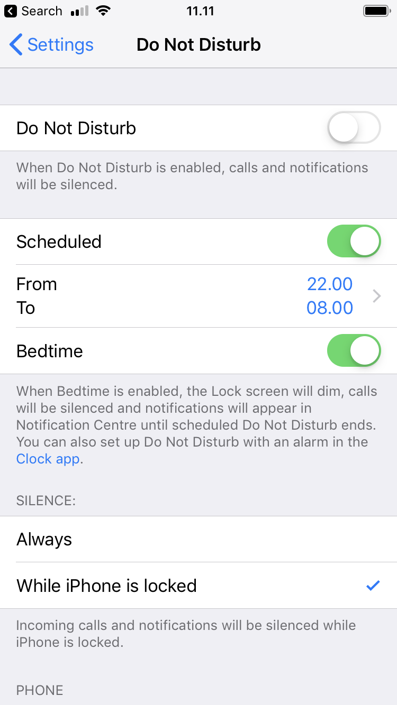

Reducing Digital Distraction
Welcome to the accompanying website to the Reducing Digital Distraction (ReDD) workshop.
Here, you will find a bit of further detail about the tools and strategies listed on the cards handed out in the workshop.
You can scroll through a large number of tools here: tinyurl.com/digital-selfcontrol.
1 Block or remove distractions
1.1 Block access
If particular websites or apps distract you, try blocking your own access to them for some time or after a certain amount of time has passed.
1.1.1 Laptop
Many browser extensions allow you to block distracting websites. Discover these by searching through the web stores for extensions for the web browser you use: - Safari Extensions - Chrome Extensions - Firefox Add-Ons
The most popular website blocker for Chrome is Block Site - Website Blocker for Chrome™:


1.1.2 Smartphone
On Android, the most popular app blocker is Stay Focused:


On iPhones, you can use Apple’s built-in app Screen Time to block your own access to particular apps.
Go to Settings -> Screen Time -> App Limits
1.2 Remove features
On laptop, you can use browser extensions to remove particular features of websites that you find distracting.
For example, you can use extensions to remove Facebook’s newsfeed (e.g. with Chrome’s News Feed Eradicator), or remove recommended videos from YouTube (e.g. with Safari’s Distraction Blocker for YouTube):


The Chrome extension Click to Remove Element allows you to, with a simple click, remove particular elements from any website:

Or, if you use Gmail in a browser, how about Inbox When Ready, which hides your inbox by default, until you deliberately click that you wish to see it?

Search through the browser extension stores for a similar extension which might be useful to you: - Safari Extensions - Chrome Extensions - Firefox Add-Ons
1.3 Minimal writing tools
When you try to focus on writing, consider getting all distractions out of the way.
For smartphones, there are dedicated minimalistic writing tools such as JotterPad:

If you use Google Docs on your laptop, there are browser extensions that can make the interface super minimalistic, such as DistractionFree for Safari:

And even Microsoft Word now includes a minimalistic ‘Focus’ mode:


1.4 Go monotasking / dumbphone
A few tools can force your devices into ‘monotasking’ mode.
1.4.1 Laptop
Cold Turkey Writer allows you to turn your laptop into a typewriter until you’ve typed a specific number of words or for a specific length of time:

1.4.2 Smartphone
On Android, you can simulate a similar situation with the app Dumbphone: 
On iPhones, you can get the same effect by using the Screen Time app’s ‘Downtime’ feature. When ‘Downtime’ is scheduled, only phone calls and apps that you choose to allow are available:


2 Track yourself
2.1 See how your spend your time
Various tools are available to see how your spend time on your devices, and compare it to your goals.
On laptop, one of the most popular tools is RescueTime:

2.1.1 Android
On Android, apps such as Usage Time provide the same functionality:

Google has also begun to provide the same functionality via their Digital Wellbeing app which comes pre-installed on many newer devices (Settings > Digital Wellbeing):
2.1.2 iOS
On iOS, Apple’s recent app Screen Time provides this ability:

2.2 Work in bursts with a timer - Pomodoro technique
To keep you on track with what you’re momentarily doing, many people track themselves with a countdown timer. This is often done in adherence to the ‘Pomodoro’ technique, where you break your work down into intervals, typically 25 minutes in length, separated by short breaks.
2.2.1 Laptop
Numerous tools exist for implementing this, for example Be Focused:
You can also combine this with blocking distracting websites during work intervals, for example with FocusMe:
2.2.2 Android
Apps that implement this functionality include Its Study Time:


3 Advance your goals
3.1 Make new tabs remind you of your goals
On laptop, make new tabs remind you of what you need to do.
For example, you can use the Chrome extension Focus to turn new tabs into a todo-list:
This extension also lets you block distracting websites while you focus on a specific task.
Search through the browser extension stores for a similar extension which might be useful to you: - Safari Extensions - Chrome Extensions - Firefox Add-Ons
3.2 Motivational quotes
On laptop, use new tabs to remind of what’s important in life.
For example, use the Chrome extension Daily Motivation to replace the content of new tabs with motivational quotes:
Search through the browser extension stores for similar extensions for your browser: - Safari Extensions - Chrome Extensions - Firefox Add-Ons
3.3 Replace Facebook’s newsfeed with a todo-list
On laptop, replace Facebook’s newsfeed with reminders of what you need to do.
For example, use the Chrome extension Todobook to replace Facebook’s newsfeed with a todo list.

Search through the browser extension stores for similar extensions for your browser: - Safari Extensions - Chrome Extensions - Firefox Add-Ons
3.4 Automatically redirect yourself away from distraction
On laptop, automatically redirect yourself away from distracting websites when you need to focus.
For example, use the Chrome extension Timewarp:

Search through the browser extension stores for similar extensions for your browser: - Safari Extensions - Chrome Extensions - Firefox Add-Ons
3.5 Periodic reminders
Remind yourself to mindful of what you’re doing.
For example, use the Chrome extension Gen4 to get period reminders of what you’re supposed to be doing while you’re browsing the web:


4 Reward or punish yourself
4.1 Protect a virtual creature by sticking with your intentions
To get a little extra push of motivation to use your devices in the way you intended, you can introduce a little extra reward.
One of the most popular apps is Forest which lets you grow virtual trees during focus sessions, that die if you do not stick with your intention.


Forest is available for iOS, Android, and as a Chrome extension.
Other tools include Feed the Goat (Chrome Extension) and Flora (iOS):
 

4.2 Writing under pressure
The online tool The Most Dangerous Writing App helps you get into the flow of writing by adding pressure: You set a target word count or duration of time, begin typing, and if you stop typing for more than a few seconds before you hit the goal, all you have typed is deleted!

Perfect for simulating the feeling of being so close to a deadline that procrastination is no longer an option!
5 Change your digital environment
5.1 Go grey-scale (smartphone)
A simple way to make your smartphone less distracting is to turn it greyscale when you do not need color.

On iPhone, you can set a triple-tap on the Home button to toggle grey scale on and off: - Settings > Accessibility > Accessibility Shortcut > Colour Filters
Newer versions of the Android operating system may include toggle of gray scale in your phone’s quick settings.
5.2 Arrange your apps (smartphone)
Try arranging your apps so that your home screen is minimalistic and simple, and so that the apps you’d like to use less often require a bit more effort to reach.
Limit your first page of apps to only apps you use for quick in-and-out tasks - move the rest of your apps, especially mindless choices, off the first page and into folders.


5.3 Do not disturb during set hours
Schedule do not disturb, so that during certain hours (e.g. 9pm to 8am) only calls from your favorite contacts go through directly.

Wind Down on newer versions of Android also provide this feature, along with the ability to automatically turn your phone greyscale when getting ready for bed.
5.4 Manage notifications
Be ruthless about which apps you give the ability to send you notifications.
On iPhone, go to Settings > Notifications and carefully consider which apps should be allowed to disturb you.
On a Mac, newer operating systems also include a Do Not Disturb mode, for when you need to focus without having popups about incoming email etc.:

5.5 Use full-screen (laptop)
On a laptop, try limiting the amount of information available to you to what you actually need for your task.
On a Mac, one good way of doing this is to use full screen mode to e.g. show have the two tools you need side by side:
Figure 5.1: Rather than this…
Figure 5.2: … try this